먼저 생각해 보세요.
Ich mache einen Lernplan, um nichts zu vergessen. 여기서 um … zu는 무엇을 나타내나요?
um … zu + 동사 원형은 '~하려고, ~하기 위해'라는 뜻이에요.
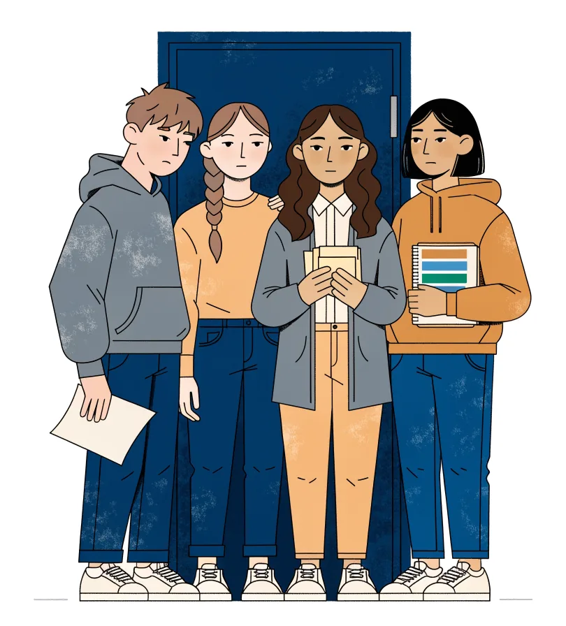
9월 말, 새 학년의 첫 수학 시험지를 돌려받았어요. Lukas는 5를 받아서 기운이 없어요. 친구들이 저마다 공부법을 알려 줘요. 9b는 이 이야기를 팟캐스트에 넣기로 했어요.
눌러서 들어 보세요.
먼저 생각해 보세요.
Ich mache einen Lernplan, um nichts zu vergessen. 여기서 um … zu는 무엇을 나타내나요?
um … zu + 동사 원형은 '~하려고, ~하기 위해'라는 뜻이에요.
Lektion 1의 낱말 다섯 개를 다시 떠올려 보세요.
문법 um … zu, damit, Genitiv (die Note des Tests), wegen, trotz
이 과를 마치면 내 공부법을 소개하고, 무엇을 위해 하는지 목적을 말하고, 경험을 살려 조언할 수 있어요.
9월 말 쉬는 시간, 9b 교실 앞이에요. 방금 수학 시험지를 돌려받았어요.
들으면서 찾아보세요. 친구들은 Lukas에게 어떤 공부법을 알려 주나요?
두 주 뒤 방과 후, 빈 교실이에요. Elif와 Lukas, Yuna가 팟캐스트에 넣을 인터뷰를 녹음해요.
들으면서 찾아보세요. Lukas는 어제 본 시험에서 몇 점을 받았나요?
두 대화를 듣고 답하세요.
Welche Note hat Lukas in der Mathearbeit?
Lukas hat eine Woche für die Mathearbeit gelernt.
Er hat nur am Abend vor der Arbeit gelernt.
Warum macht Elif einen Lernplan?
Wo liegt Yunas Handy, wenn sie lernt?
Was rät Frau Schneider?
Frau Schneider sagt den Termin der Arbeit früh.
Lukas는 어제 본 시험에서 몇 점을 받았나요?
낱말 33개예요. 낱말이나 예문 앞의 단추를 누르면 소리가 나요. 명사는 der, die, das를 색으로 구분했어요.
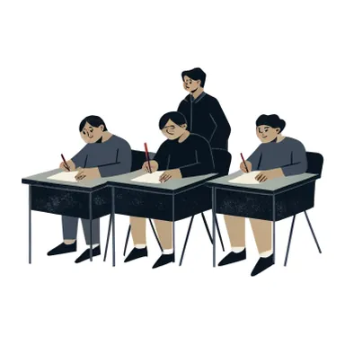
die Klassenarbeit, die Klassenarbeiten (학교) 시험. 짧게 die Arbeit
Morgen schreiben wir eine Klassenarbeit.내일 우리는 시험을 봐요.
die Prüfung, die Prüfungen 시험, 평가
Die Prüfung dauert zwei Stunden.그 시험은 두 시간 걸려요.
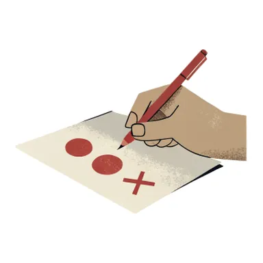
der Fehler, die Fehler 실수, 틀린 곳
Ich habe nur zwei Fehler gemacht.나는 두 개만 틀렸어요.
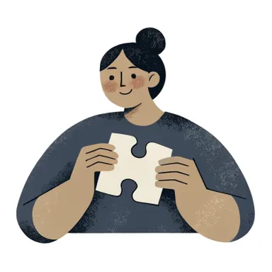
die Lösung, die Lösungen 답, 풀이
Die Lösung steht auf der anderen Seite.답은 다른 쪽에 있어요.
das Ergebnis, die Ergebnisse 결과
Das Ergebnis des Tests ist gut.시험 결과가 좋아요.
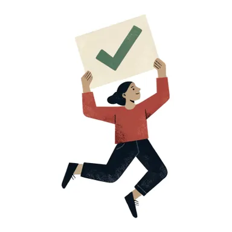
bestehen, hat bestanden 합격하다, 통과하다
Ich habe die Prüfung bestanden.나는 시험에 합격했어요.
schaffen, hat geschafft 해내다
Du schaffst das!넌 해낼 수 있어!
sich vorbereiten, hat sich vorbereitet 준비하다
Ich bereite mich auf die Arbeit vor.나는 시험을 준비해요.
der Stress 스트레스
Vor Prüfungen habe ich viel Stress.시험 전에는 스트레스를 많이 받아요.
der Druck 압박, 부담
Der Druck in der Schule ist groß.학교에서 받는 부담이 커요.
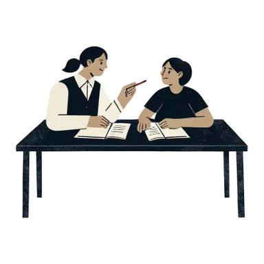
die Nachhilfe 과외, 보충 지도
Ich bekomme Nachhilfe in Mathe.나는 수학 과외를 받아요.
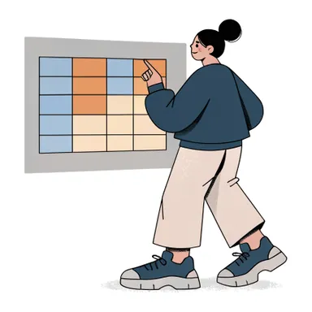
der Lernplan, die Lernpläne 공부 계획
Ich mache einen Lernplan für die Woche.나는 한 주 공부 계획을 세워요.
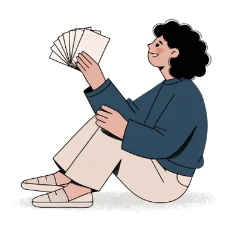
die Karteikarte, die Karteikarten 암기 카드
Ich schreibe die Wörter auf Karteikarten.나는 낱말을 암기 카드에 써요.
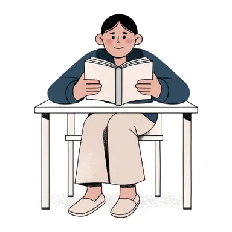
sich konzentrieren, hat sich konzentriert 집중하다
Ich kann mich nicht konzentrieren.나는 집중이 안 돼요.
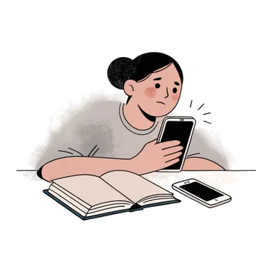
ablenken, hat abgelenkt 주의를 흩뜨리다, 방해하다
Das Handy lenkt mich ab.휴대폰 때문에 집중이 안 돼요.
weglegen, hat weggelegt 치워 두다
Leg bitte das Handy weg!휴대폰 좀 치워 둬!
sich merken, hat sich gemerkt 기억해 두다, 외우다
Ich kann mir die Wörter gut merken.나는 낱말을 잘 외워요.
zusammenfassen, hat zusammengefasst 요약하다
Ich fasse den Text zusammen.나는 그 글을 요약해요.
auswendig 외워서
Ich lerne die Wörter auswendig.나는 낱말을 외워요.
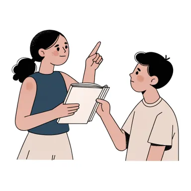
erklären, hat erklärt 설명하다
Emma erklärt mir die Aufgabe.Emma가 나에게 그 문제를 설명해 줘요.
verbessern, hat verbessert 고치다, 더 좋게 하다
Ich möchte meine Note verbessern.나는 성적을 올리고 싶어요.
das Gehirn, die Gehirne 뇌
Das Gehirn braucht Pausen.뇌는 쉬는 시간이 필요해요.
regelmäßig 규칙적으로, 꾸준히
Ich lerne regelmäßig.나는 꾸준히 공부해요.
rechtzeitig 제때에, 늦지 않게
Fang rechtzeitig an!늦지 않게 시작해!
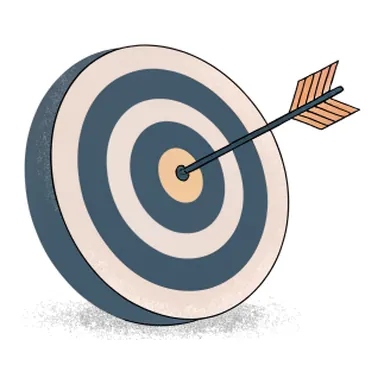
das Ziel, die Ziele 목표
Mein Ziel ist eine Zwei in Mathe.내 목표는 수학에서 2를 받는 거예요.
erreichen, hat erreicht 이루다, 닿다
Ich will mein Ziel erreichen.나는 목표를 이루고 싶어요.
aufgeben (du gibst auf, er gibt auf) 포기하다
Gib nicht auf!포기하지 마!
die Mühe 수고, 애씀
Ich gebe mir viel Mühe.나는 무척 애써요.
der Tipp, die Tipps 조언, 요령
Hast du einen Tipp für mich?나한테 해 줄 조언 있어?
raten (du rätst, er rät) 조언하다, 권하다
Was raten Sie mir?저에게 무엇을 권하시나요?
damit ~하도록
Ich erkläre es dir, damit du es verstehst.네가 이해하도록 내가 설명해 줄게.
wegen ~ 때문에
Wegen des Trainings habe ich keine Zeit.훈련 때문에 나는 시간이 없어요.
trotz ~에도 불구하고
Trotz des Stresses schlafe ich gut.스트레스를 받아도 나는 잘 자요.
이 과의 낱말로 여덟 문제를 풀어요.
예문을 보고 답해 보세요.
Ich erkläre dir die Aufgaben, damit du sie verstehst. 누가 설명하고 누가 이해하나요?
규칙
목적은 um … zu나 damit으로 말해요. 앞 문장과 뒤 문장의 주어가 같으면 um … zu + 동사 원형을 쓰고, 주어는 다시 쓰지 않아요. 주어가 다르면 damit을 쓰고 동사를 맨 끝에 둬요.
| 주어가 같아요: um … zu | 주어가 달라요: damit |
|---|---|
| Ich lerne, um die Prüfung zu bestehen. | Ich lerne, damit meine Eltern zufrieden sind. |
| Yuna legt das Handy weg, um sich zu konzentrieren. | Yuna legt das Handy weg, damit es sie nicht ablenkt. |
주의 나뉘는 동사는 zu가 가운데로 들어가요. um früh anzufangen, um nicht aufzugeben.
예문을 보고 답해 보세요.
das Ergebnis des Tests에서 des Tests는 무슨 뜻인가요?
규칙
Genitiv는 '~의'라는 뜻이에요. 꾸미는 명사 뒤에 와요. der와 das는 des로 바뀌고 명사 끝에 -s나 -es가 붙어요. die와 복수는 der로 바뀌고 명사는 그대로예요.
| 1격 | Genitiv | |
|---|---|---|
| 남성 | der Test | das Ergebnis des Tests |
| 중성 | das Jahr | das Ende des Jahres |
| 여성 | die Arbeit | der Termin der Arbeit |
| 복수 | die Schüler | die Fragen der Schüler |
주의 ein, mein, kein도 똑같이 바뀌어요. der Tipp eines Freundes, das Zimmer meiner Schwester. 사람 이름에는 -s를 붙여 앞에 써요. Emmas Lernplan.
예문을 보고 답해 보세요.
wegen과 trotz 뒤에는 무엇이 오나요?
규칙
wegen은 '~ 때문에', trotz는 '~에도 불구하고'예요. 둘 다 뒤에 Genitiv 명사가 와요. weil과 obwohl 뒤에는 문장이 오고, wegen과 trotz 뒤에는 명사가 와요.
| 문장으로 | 명사로 |
|---|---|
| Weil ich Training hatte, … | Wegen des Trainings … |
| Obwohl ich Stress habe, … | Trotz des Stresses … |
| Weil es regnet, … | Wegen des Regens … |
주의 말할 때는 wegen 뒤에 3격을 쓰는 사람도 많아요. wegen dem Training. 글을 쓸 때는 Genitiv를 써요.
Emma와 Lukas가 같이 수학을 공부해요. 듣고 답하세요.
Zusammen lernen
Emma Lukas, leg bitte das Handy weg. Es lenkt dich ab.
Lukas Nur noch eine Nachricht! Okay, jetzt ist es aus.
Emma Gut. Zuerst wiederholen wir die Aufgaben der letzten Stunde, um die Regel zu verstehen.
Lukas Und dann?
Emma Dann machst du drei Aufgaben allein. Ich sage nichts, damit du deine Fehler selbst findest.
Lukas Und nach zwanzig Minuten machen wir eine Pause, oder? Mein Gehirn braucht Schokolade.
Was soll Lukas mit dem Handy machen?
Zuerst wiederholen Emma und Lukas die Aufgaben der letzten Stunde.
Warum sagt Emma nichts, wenn Lukas allein arbeitet?
Lukas는 20분 뒤에 무엇을 하고 싶어 하나요?
듣고 알맞은 것을 고르세요.
Emma는 왜 날마다 20분씩 공부하나요?
Ich lerne jeden Tag zwanzig Minuten, um nichts zu vergessen.
Lukas는 토요일에 왜 공부를 못 했나요?
Wegen des Fußballspiels konnte ich am Samstag nicht lernen.
Yuna는 오늘 어떻게 했나요?
Trotz der Kopfschmerzen bin ich heute zur Schule gegangen.
선생님이 답을 나눠 주는 까닭은 무엇인가요?
Ich gebe euch die Lösungen, damit ihr eure Fehler selbst finden könnt.
한 학생이 팟캐스트 팀에 편지를 보냈어요. 읽고 답하세요.
Hilfe, ich habe Angst vor Klassenarbeiten!
Hallo „Mitreden“-Team! Ich habe ein Problem: Vor jeder Klassenarbeit habe ich große Angst.
Ich lerne viel und zu Hause kann ich alles. Aber in der Arbeit vergesse ich wegen der Angst die Lösungen.
Letzte Woche habe ich trotz des Lernplans nur eine Vier geschrieben. Meine Eltern sagen nichts, aber ich bin enttäuscht.
Meine Freundin hat mir einen Tipp gegeben: Vor der Arbeit hört sie zwei Minuten ruhige Musik.
Das probiere ich jetzt auch, um ruhiger zu werden. Habt ihr noch einen Tipp für mich? Eure Nina, 14
Was ist Ninas Problem?
Zu Hause kann Nina alles.
Welche Note hat Nina letzte Woche geschrieben?
Was macht Ninas Freundin vor der Arbeit?
Nina는 왜 친구의 방법을 해 보려고 하나요?
Elif가 금요일 수학 시험을 앞두고 세운 계획표예요. 보고 답하세요.
Elifs Lernplan für die Mathearbeit
| Tag | Was? | Wie lange? |
|---|---|---|
| Montag | Karteikarten schreiben | 20 Minuten |
| Dienstag | Aufgaben üben | 20 Minuten |
| Mittwoch | Aufgaben üben | 20 Minuten |
| Donnerstag | Emre alles erklären | 30 Minuten |
| Freitag | Klassenarbeit | – |
Wie lange lernt Elif am Dienstag?
Am Donnerstag lernt Elif allein.
목요일에는 남동생 Emre에게 전부 설명해 줘요.
Wann schreibt Elif die Klassenarbeit?
um과 damit 가운데 알맞은 말을 고르세요. 주어가 같은지 다른지 보세요.
Ich lerne jeden Tag, die Prüfung zu bestehen.
주어가 같고 뒤에 zu + 동사 원형이 있어요.
Ich erkläre es dir noch einmal, du es verstehst.
주어가 ich와 du로 달라요.
Yuna legt das Handy weg, sich zu konzentrieren.
Frau Schneider sagt den Termin früh, die Schüler planen können.
Elif schreibt Karteikarten, um die Wörter .
Ich stehe früh auf, um rechtzeitig .
나뉘는 동사는 zu가 가운데로 들어가요.
Genitiv예요. 알맞은 말을 고르세요.
Das Ergebnis Tests ist gut.
Der Termin Klassenarbeit ist am Freitag.
Am Ende Jahres bekommen wir das Zeugnis.
Das ist der Lernplan Schwester.
Die Fragen Schüler sind interessant.
Das ist der Tipp Freundes.
뒤에 명사가 오는지 문장이 오는지 보고 고르세요.
des Trainings hatte Lukas keine Zeit.
훈련 때문에 Lukas는 시간이 없었어요.
des Stresses macht Yuna Pausen.
스트레스를 받아도 Yuna는 쉬는 시간을 가져요.
ich Training hatte, konnte ich nicht lernen.
뒤에 동사가 있는 문장이 와요.
der Angst hat Nina die Arbeit geschrieben.
뒤에 명사가 와요.
Lukas wenig gelernt hat, hat er eine Drei.
뒤에 동사가 있는 문장이 와요.
der Klassenarbeit kann Emma heute nicht kommen.
낱말을 순서대로 눌러 문장을 만드세요.
나는 아무것도 잊지 않으려고 공부 계획을 세워.
네가 이해하도록 내가 설명해 줄게.
훈련 때문에 나는 시간이 없었어.
시험 결과가 좋아.
낱말과 뜻을 짝지으세요.
듣고 그대로 써 보세요.
Ich habe eine Fünf in Mathe. 나 수학에서 5 받았어.
Ich mache einen Lernplan. 나는 공부 계획을 세워.
Du schaffst das! 넌 해낼 수 있어!
Ich lerne am besten … 나는 ~ 가장 잘 배워.
Ich mache einen Lernplan. 나는 공부 계획을 세워.
Ich schreibe Karteikarten. 나는 암기 카드를 써.
Ich lerne jeden Tag zwanzig Minuten. 나는 날마다 20분씩 공부해.
Ich mache das, um … zu … 나는 ~하려고 그렇게 해.
…, damit ich … 내가 ~하도록
Mein Ziel ist … 내 목표는 ~이야.
Ich rate dir: … 내가 권하는 건 이거야.
Du solltest rechtzeitig anfangen. 늦지 않게 시작하는 게 좋아.
Bei mir hilft … 나한테는 ~이 도움이 돼.
Probier das mal! 한번 해 봐!
Du schaffst das! 넌 해낼 수 있어!
Gib nicht auf! 포기하지 마!
Das nächste Mal wird es besser. 다음에는 더 나아질 거야.
대화 A에서 역할을 하나 고르세요. 상대의 말은 음성으로 나오고, 내 차례에는 직접 말해요.
내 공부법을 떠올리며 적으세요. 완성된 문장을 소리 내어 읽어 보세요.
Ich lerne am besten am Nachmittag in meinem Zimmer.
Ich schreibe Karteikarten, um die Wörter schnell zu lernen.
Mein Tipp: Leg das Handy weg!
Trotz des Stresses gebe ich nicht auf.
Mein Lerntipp für den Podcast
팟캐스트 「Mitreden」 팀에 내 공부법을 소개하는 글을 보내요. 일곱 문장쯤 써요.
Hallo „Mitreden“-Team, für mich ist Englisch schwer. Ich lerne am besten am Nachmittag in meinem Zimmer. Ich schreibe die Wörter auf Karteikarten, um sie schnell zu wiederholen. Mein Handy liegt im Wohnzimmer, damit es mich nicht ablenkt. Wegen des Volleyballtrainings habe ich am Dienstag keine Zeit. Trotz des Trainings lerne ich an den anderen Tagen zwanzig Minuten. Mein Tipp: Fangt rechtzeitig an und gebt nicht auf!
다 쓴 뒤에 확인해 보세요.
Ich kann erklären, wie ich lerne und mich auf Klassenarbeiten vorbereite.내가 어떻게 공부하고 시험을 준비하는지 설명할 수 있어요.
Ich kann mit um … zu und damit sagen, was mein Ziel ist.um … zu와 damit으로 목적을 말할 수 있어요.
Ich kann anderen Tipps zum Lernen geben.다른 사람에게 공부 조언을 해 줄 수 있어요.